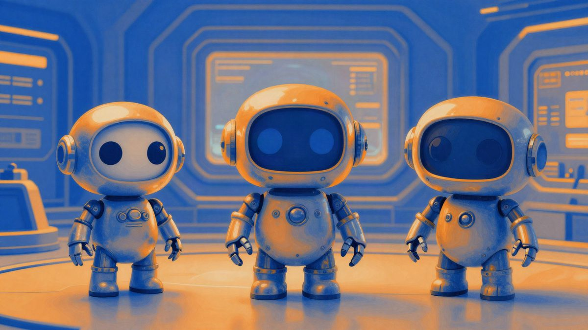

Disney i AWS predstavili tri Star Wars robota koji sami odlučuju što će reći i kako će se kretati

Walt Disney Imagineering je s AWS-om razvio tri robotska lika, Anzellane iz Star Warsa, kojima AI sam odlučuje što će reći i kako će se kretati. Za razliku od klasičnih animatronika, ne ponavljaju unaprijed zadanu koreografiju nego u stvarnom vremenu reagiraju na goste. Bit će prikazani na konferenciji AWS re:Invent u Las Vegasu, a dolazak u Disneyjeve parkove nije potvrđen.
Walt Disney Imagineering, odjel Disneyja koji projektira i vodi tematske parkove, predstavio je tri nova robotska lika razvijena u suradnji s AWS-om. Riječ je o Anzellanima, malenoj vrsti iz filma Star Wars: Mandalorian i Grogu. Likovi se zovu Viro Vere, Kado Brea i Jib Brea. Ugrađeni AI sam odlučuje što će robot reći i kako će se kretati.
Posjetitelji će Anzellane moći vidjeti na konferenciji AWS re:Invent 2026, koja se održava od 30. studenoga do 4. prosinca u kongresnom centru Las Vegas Convention Center i u Caesars Forumu u Las Vegasu. Roboti će biti u dijelu za korisničke prezentacije (customer showcase). Hoće li se pojaviti u Disneyjevim parkovima i kada, još nije rečeno.
Od ponavljanja do reakcije
Disney takve robote naziva audio-animatronicima, a prvi put su pjevali 1963. u atrakciji Enchanted Tiki Room u Disneylandu. Dosadašnji animatronici u svakoj su izvedbi radili iste pokrete istim redoslijedom, a upravo je precizno odrađena koreografija bila dio njihove draži.
Anzellani rade drukčije. Disney kaže da u stvarnom vremenu registriraju ponašanje gostiju. Ako im posjetitelj mahne, mahnut će mu natrag, a kad im se obrati, odgovaraju na engleskom ili na anzelanskom jeziku. Prema Disneyju, nijedan susret s njima neće biti isti kao prethodni.
Kako je to građeno
Inteligenciju likova pokreće AWS-ova tehnologija. Model za donošenje odluka obrađuje brze reakcije, a veliki model daje cjelovitu procjenu situacije. Disney kaže da su svaku repliku i osobne manire likova osmislili i izradili Imagineeri, a ne AI.
Kyle Laughlin, viši potpredsjednik za istraživanje i razvoj, tehnologiju i inženjerstvo u Walt Disney Imagineeringu, rekao je da Disney uvijek kreće od priče i emocije koju žele izazvati kod gostiju. Kod Anzellana je to čuđenje. Laughlin kaže da su kombinacijom AWS-ove tehnologije i inventivnosti Imagineera htjeli oživjeti likove u veličini i mjerilu koje gosti očekuju.
Izvor: Gigazine